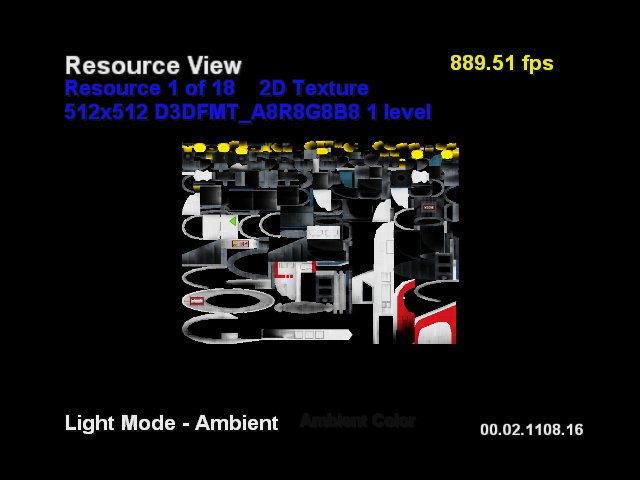
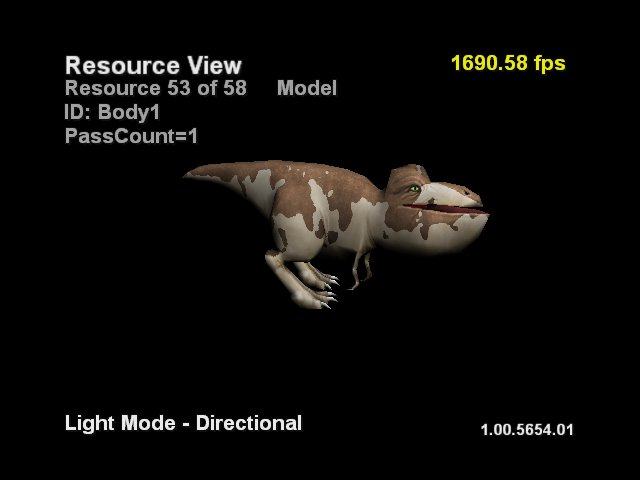
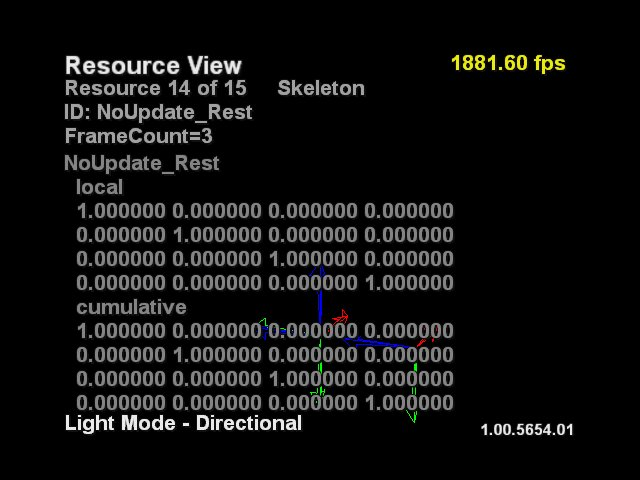
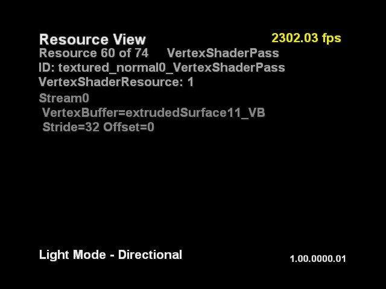

Resource View mode shows each of the resources used to create the final model. Pushing the D-pad up or down cycles through each of the resources. Pushing the White button changes the mode to Model View. The current resource number is displayed in the upper-left corner of the display along with the total number of resources. Resources are divided into the following categories:

Displays the texture map. The upper-left corner shows the size and format of the texture, as well as the number of mip levels.
Pushing the Y (yellow) button displays just the alpha channel of the texture. Pushing Y again returns you to the default texture display showing the RGB channels. Use the left thumbstick to shrink or stretch the texture, horizontally or vertically.
If the number of mip levels is greater than one, pushing A or B increases or decreases (respectively) the mip level, and displays the mipmap for that level.
Displays the name of the frame (Animation Node), the sampling rate, and the duration of the animation.
Displays the XP face of the cube map.
Displays the name of the index buffer.

Displays each of the models by itself. The upper-left corner shows the ID of the model and the number of passes it took to draw the model. This is the equivalent to Model View for each model resource.
Displays the name of the pixel shader.
Displays the name of the pixel shader pass.

Displays the frame hierarchy of the object. The actual frames may not be visible due to camera positioning. This view shows the number of frames in the hierarchy (FrameCount), the local transformation matrix (local), and the concatenation of all the matrices affecting the frame (cumulative).
Displays nothing.
Displays the name of the vertex buffer.
Displays the name of the vertex shader.

Displays the name of the shader pass and the number of shader resources. For each stream associated with the pass, it shows the name of the vertex buffer as well as the stride and offset for that buffer.
Displays the top-level texture map of the volume texture.